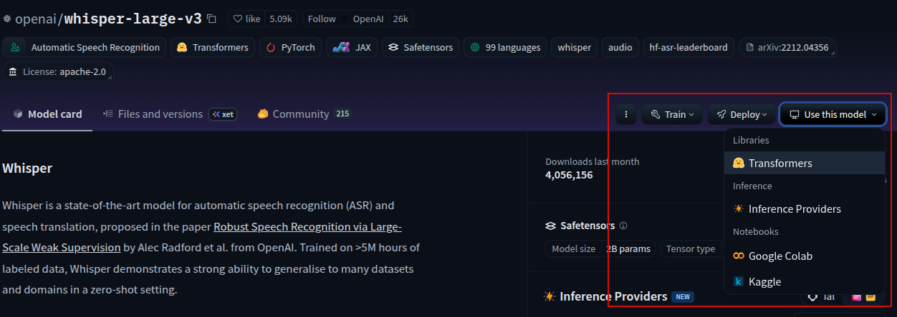

The transformers library by Hugging Face is a framework-agnostic Python library providing thousands of pretrained models for NLP, vision, and audio tasks. Its primary abstraction is the Pipeline, which handles the full preprocessing → inference → postprocessing workflow.
The library works with multiple deep learning backends — you pick your backend explicitly:
torch)tensorflow)jax, flax)This is why PyTorch is not installed automatically when you install transformers.
The Pipeline object is the high-level abstraction for solving tasks end-to-end. One task string hides modality-specific plumbing.
from transformers import pipeline
pipe = pipeline("automatic-speech-recognition",
model="openai/whisper-large-v3")
result = pipe(audio_file)# batch_size multiplies memory requirement proportionally
asr(audio_16KHz,
chunk_length_s=30,
batch_size=4,
return_timestamps=True)["chunks"]Larger batch size = more GPU memory used = faster throughput (if hardware allows).

A tokenizer converts raw text strings into numerical token IDs:
"Hello world" → [15496, 995]Key rules: